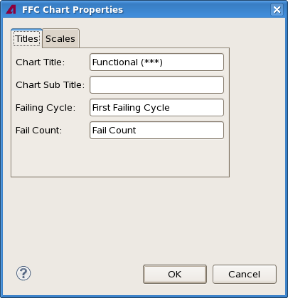
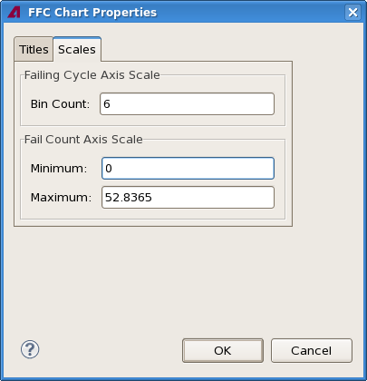

FFC Pareto chart properties
The FFC Chart Properties dialog lets you specify certain aspects of the look of an FFC Pareto chart view, including the labels and the setting for the axes.
The dialog has two tabs, both of which are described below.

The Titles tab contains these elements:
- Chart Title: This field contains the title displayed at the top of
the chart.
By default, this is the test name and the test number in parentheses.
- Chart Subtitle: The subtitle displayed beneath the title of the
chart.
By default, this field is empty.
- Failing Cycle: The label for the cycle axis.
By default, this is "First Failing Cycle".
- Fail Count: The label for the fail count axis.
By default, this is "Fail Count".
Scales

The Scales tab contains these elements:
- Failing Cycle Axis Scale:
- Bin Count: The number of first failing cycle columns that are displayed in the chart.
- Test Count Axis Scale:
- Minimum: The lowest value displayed on the axis. This value is always 0.
- Maximum: The highest value displayed on the axis.
Functional changes
- Introduced in SmarTest 7.2.0
- SmarTest 7.3.2: Changed "Test Count" to "Fail Count".